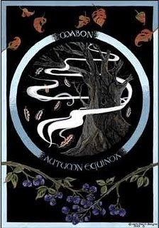
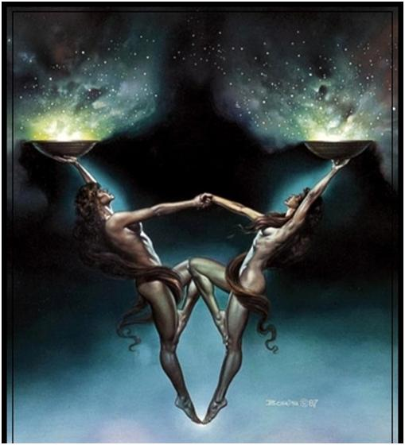
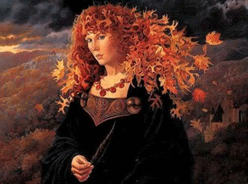
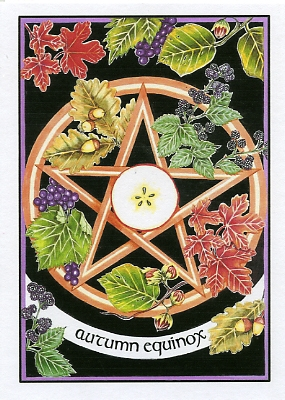

|

El 21 de Septiembre celebramos la vigilia del equinoccio de otoño. En este sabat menor el día y la noche están equilibrados, pero a partir de este día, las noches se harán más largas. Es el punto anual opuesto a Ostara. El sol entra en el signo de Libra.
Conocido También como el día de acción de gracias de las brujas y como cornucopia. Antiguamente se solía celebrar el día 25, el cual pasó a ser el día de San Miguel Arcángel para el cristianismo.
Es el tiempo de la segunda cosecha, la cosecha del vino. En el ámbito agrícola, en estos días se preparaba la segunda ronda de cultivos. Así se completaba la cosecha iniciada en Lammas. Los druidas honraban al dios del bosque dejando libaciones de vino o sidra en los árboles.
De nuevo recogemos los frutos de nuestro trabajo y nos liberamos de lo que nos impide avanzar y que por lo tanto ya no nos es necesario. Debemos hacer introspección y equilibrarnos. Podemos reflexionar sobre aquellas cosas que están desequilibradas en nuestra vida o aquellos aspectos de nuestra personalidad que no guardan armonía, y en la manera de cómo equilibrarlos. Es una buena oportunidad para terminar los asuntos que habíamos iniciado y que quedaron pendientes.
Nos preparamos para la muerte del dios en Samhain y el frío invierno. Intentamos crear un ambiente acogedor en el que pasar el otoño y el invierno.
La Diosa madre envejecida se convierte en bruja y llora a su consorte caído. El Dios pierde la batalla frente a la oscuridad. Es el momento sacrificial en el que aprendemos a dejar morir lo que amamos. Aquello que dejemos, volverá a nosotros bajo nuevas formas.
Decoramos el altar con hojas otoñales, piñas y bellotas, nueces u otros frutos secos. Trenzamos coronas de hiedra y llenamos nuestros cuernos en señal de abundancia.
Los antiguos se pintaban la cara de blanco y negro. En Europa central se celebraban verbenas en las que se bebía vino, hidromiel y leche de yegua fermentada. Las sacerdotisas tomaban Amanita muscaria, con la que conseguían bailar durante varios días sin cansarse.

Ritual:
Antes del ritual, podemos caminar por un bosque o parque para recoger las hojas secas, las dejaremos en una cesta y las colocaremos en el altar.
Tomamos la canasta y caminamos alrededor del círculo esparciendo las hojas mientras decimos:
Las hojas caen, los días se enfrían
La Diosa tira su manto de tierra, alrededor de ella,
Mientras tú, Oh gran Dios del sol navegas hacia el Oeste,
A las tierras del descanso eterno
Envuelto en la frescura de la noche
Las frutas maduran, las semillas caen,
Las horas del día y la noche están equilibradas.
Vientos fríos soplan desde el Norte gimiente.
En esta aparente extinción del poder de la naturaleza,
Oh bendita Diosa, sé que la vida continúa.
Porque la primera es imposible sin la segunda cosecha, A
Al igual que la vida es imposible sin la muerte.
Bendiciones sobre ti, Oh Dios caído mientras viejas
A las tierras del invierno y a los amorosos brazos de la Diosa.
Regresamos al altar, dejamos la cesta, levantamos los brazos y decimos:
Oh bendita diosa de toda fertilidad,
He sembrado y cosechado los frutos de mis acciones, buenas y malas.
Dame el valor para sembrar semillas de alegría y amor
En el año venidero, desterrando la miseria y el odio.
Enséñame los secretos de la existencia sabia sobre este planeta
¡oh luminosa de la noche!
Meditamos sobre el envejecimiento, la muerte y el renacimiento.
Damos las gracias por lo conseguido y escribimos nuestros deseos.
Quemamos el papel en la vela del color que hayamos elegido.
(Hay quien prefiere no realizar ningún trabajo mágico en este Sabat por ser la luz demasiado vulnerable.)
Damos paso al banquete.
Después despedimos a los dioses y a los elementos.

Dioses: Mabon y su madre Modrom; Baco, Deméter, Perséfone, Hermes, Diosa anciana
Alimentos: pan de nueces, sidra, vino tinto…
Inciensos: ciprés, sándalo, pino, enebro, salvia.
Piedras: ámbar, ojo de tigre, ojo de gato, ágata amarilla, cuarzo citrino.
Runas: La runa de la cosecha Gera
Objetos y símbolos: cuerno de la abundancia, balanza, corona de hiedra.
Colores: rojo, naranja, dorado, marrón, morado.

|
 RSS
RSS